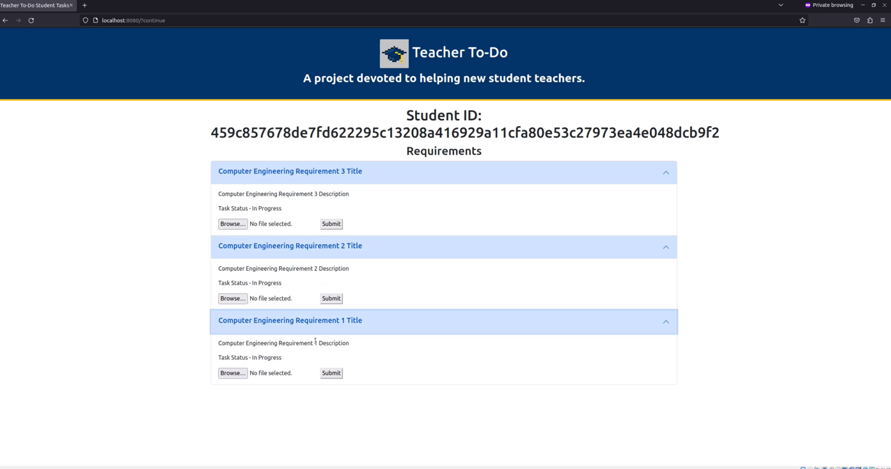
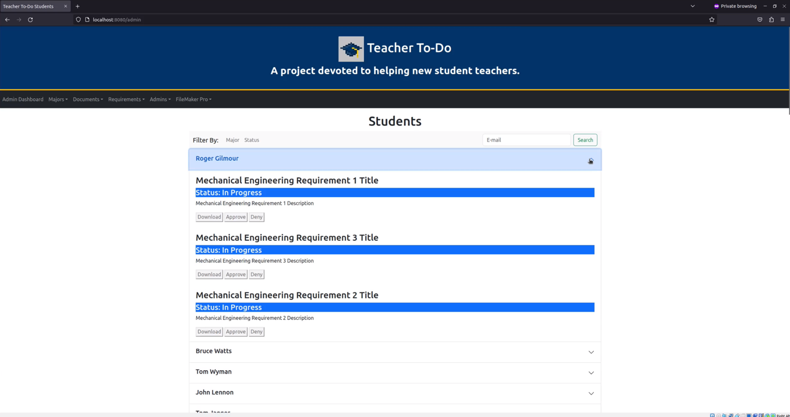

Teacher To-Do
A project devoted to helping new student teachers.
Problem Statement
Our team is working to create a viable product to help manage a student-teacher transition process. It will reduce the amount of time it takes to get students enrolled in teaching jobs outside of college and streamline the application process for faculty.
This process is offered to 12 different degree programs, each with differing requirements that must be managed. Currently, the College of Education uses a manual process to track requirements for each individual student teacher in an Excel spreadsheet. College of Education staff spend well over 200 hours each semester on this process that could be used to provide other services to students.
General Solution
Our goal is to make this process automated, so that no data will need manual input, and students can upload their own data for review by faculty members at their earliest convienence. Simultaneously, faculty will also be able to see student progress, and be able to identify exactly where they are in their current projection plan. An approximated idea of what this would look like is shown below.

This project stemmed from our sponsor, Chris Aungst, in the form of this Capstone Project Proposal
Team
Our team consists of 4 members and our client:

Sam Gerstner - Team Lead

Alexander Frenette - Backend Developer

Noah Nannen - User Interface Developer

Shlok Sheth - Full Stack Developer
Chris Aungst - Director of Professional Education Program and Project Client
Requirements
Our requirements include:
- A streamlined experience for any students or faculty who are involved in the process.
- Safe and efficent manangment of data.
- Maintained privacy for students and faculty throughout our system.
We have accomplished these requirements by starting with the data manangment systems and moving up to the user interface from there, allowing all of the data to be securly transferred to and from the students or faculty that would be using this system. Creating a backend-based system allows for more changes to be implemented if the requirements for certain courses need to be added, removed or altered. It also allows for more of a streamlined experience through differing programs having a direct connection to their backend counterparts
Project Solution
Our current solution is a web application that allows the College of Education to track and manage student requirements. This application acts as a single source of truth for a student's progression in the Student Teacher Intern Certificate (STIC) program. The web app has two views:
Student Dashboard
The student dashboard is the page that students will be brought to when they log in to the application. It will display their tasks in a list format, and each task will have a due date as well as a task status, either being Incomplete, In Progress, or Completed. A student will be able to access each of their tasks, attach documents to certain tasks, and then submit those documents for administrator review.

Administrator Dashboard
The administrator dashboard is more complex than the student dashboard. This dashboard displays all students currently enrolled in the STIC program, as well as all of their tasks, task statuses, and any documents that those tasks may need. Of course, this can become overwhelming very quickly, so the administrator dashboard also includes a filtering system to help administrators be able to narrow down particular students, whether it be by name or based on their task status. The administrator dashboard also includes a navigation bar at the top of the page. In this navigation bar, administrators are able to add new majors, requirements, and even new administrators to the STIC program, as well as review any majors, requirements, documents, or administrators currently implemented in the program. Finally, the program allows for student data to be imported or exported using FileMaker Pro or an Excel spreadsheet, which allows for flawless integration with the current system in use by the College of Education.

Front End
HTML-5
We used HTML-5 to create and format our two dashboards (Showcased on the Solution tab), both in the trial stages of the project and in the final project itself. We also used HTML-5 to create this website, which helps to elaborate more on the project and its different aspects.
Bootstrap
As a formatting tool, CSS files can really only do so much. We implemented Bootstrap as a more formal and set way to ensure our front end dashboards looked uniform and smooth for the project. It also gave us more tools to implement in the dashboards, such as the expanding accordian tabs that display the tasks for both students and administrators.
Thymeleaf
The implementation of Thymeleaf was used as a way to correctly and quickly draw from Java files and store those variables in the HTML pages, while still maintaining the structure of an HTML webpage. This was used as a way to help implement a connection between the back end Java code and the front end HTML code.
JavaScript
As many developers know, JavaScript is neccesary to many different parts of any front end programs. It handles the movements and operations of the buttons, tabs, accordians, and many other small things that allow the front end pages to work successfully. While its involvment with the project was minimal, it still adds a lot to our webpage.
Back End
Java
Our project's main backend is coded in Java. It is set up and shared between all of the different technologies that we are using. Java is also a language that our team is familiar with, so we have chosen to use that in order to make sure all of us are able to contribute to and understand the project.
SpringBoot
Our team used SpringBoot to be able to have webpage generation for the project. We also used it to store our data endpoints and have a launching point for the web app. Spring works as the overall connecting portion of our product, working to connect the web app to the backend database.
MySQL
We used MySQL to store the data that the web app would need to be able to draw from for both dashboards. The student dashboard uses it to draw in one student's data, using the user ID to find the records of the student's tasks and major. The administrator dashboard uses it to be able to seperate the students, drawing in all of the information and using it to seperate out student tasks by students.
Amazon S3
Our team chose S3 because we have already had experience with Amazon Web Services in the past. Amazon S3 is used as our document storage, so it can store whatever documents we need and assign it to a specific task ID to be able to be referenced by our web app later. This means that we don't have to take up space by assigning the document to a location in a MySQL document.
Project Manangment
GitHub
We decided on using GitHub very early on in the project. It was the easiest way to manage our project and organize it based on the amount of code we would be writing asynchronously. We have our project on GitHub, seperated out into many repositories to keep everything organized and keep it from interacting with each other.
IntelliJ
We found IntelliJ to be the best suited to our project, as it is able to run our project's two servers at the same time. It is also able to connect straight to GitHub, which reduced the need to have multiple tabs open at the same time. Overall, it has been our main IDE for our group for the duration of this project.
Microsoft Office
Microsoft Office is where all of our deliverables are stored. The online version allows for asynchronous work on documents, and we have all worked with the Office Suite before. It is also secure and not as finicky as Google Drive or GitHub, both of which we attempted to use before we switched over to Microsoft Office.
Discord
We use Discord as our main form of communication. It allows us to tag certain team members as well as communicate through text and calls in one space. It is also been our way of keeping track of due dates in one location, as we use it to schedule when we complete items by and when certain parts of the project need to be finished by.
Gantt Chart
Our schedule is shown in the Gantt Chart below.
Deliverables
We upload deliverables weekly, and will be making updated changes throughout the 2022 - 2023 school year.
If you would like to see our early demos, you may see the Alpha iterations of the Student Landing Page and the Administrator Landing Page.
Team Inventory Document:
Our Team Inventory Document reviews each member of our team, as well as showing the current job title and past experience with technology.
Team Standards Document:
Our Team Standards documents how our group functions, and what our team does in certain situations.
Requirements Document:
Our team Requirements Document reviews the requirements for our project and how we plan to tackle them.
Feasibility Document:
Our team Feasibility Document reviews the project's feasibility and what technologies we can use to accomplish the project's goal.
Mini-Intro:
Our Mini Intro is a condensed version of our project proposal, brushing over some of the more technical topics to talk about the project as a whole.
Software Design Document:
Our Software Design Document reviews how we are going to set up our project, and how we plan to ensure it's success through its design and different types of software.
Alpha Demo Flight Plan:
The Alpha Demo Flight Plan reviews what our software at the base level is capable of, and reviews those capabilities step by step.
UGRADS Presentation:
The UGRADS Presentation is a final in-depth look at our project, with a walkthrough of different items that are involved in the product's everyday functionality.